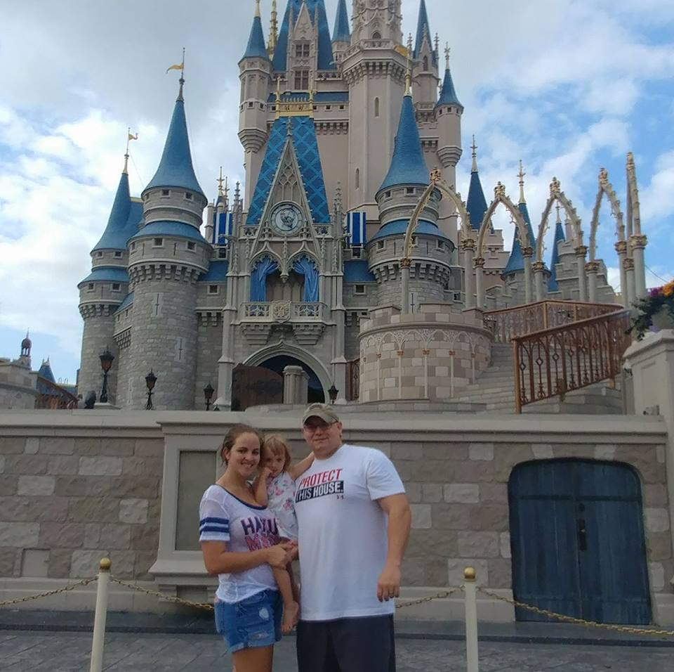

A little about me...
I am a self taught web developer out of Orlando, Florida. I am also a former United States Army service member. After i got out of the Army i went down many different paths. Not all were pleasant but i found a way most of the time. After overcoming alot of life hurstles and adjusting back to the civilian way of life i found i had a decision to make. Which was finding a new career that i would do for the rest of my life.
Coding was not something i ever thought i would be doing. But after alot of road blocks i found myself looking into a coding bootcamp, which is when i realized i could teach this stuff to myself without having to ever go to a bootcamp or college. I then looked into online sources to learn from i started out at Code Academy. Then realized i wanted to be able to feel like i was in a real classroom, but from the comfort of my parents kitchen table. Yes my parents thats where i was living at the time of making this site. Anyways i decided to look into Teamtreehouse. That was when i found how much i loved coding and i picked it up very quickly.
Within 1 week i was making responzive websites form HTML and CSS. Once i made a desktop site i met Jonathan Sampson one of the devs for the Brave browser. He taught me alot and really kept me motivated to keep moving forward. Within months of constant studying and motivation i was making the incredible websites you see on my project page. If you enjoyed the sites you saw and the testimonials of the people i have made sites for and want to be one of them. Contact me anytime, my contact information is located on the contact page. Thank you for vising the page. I look forward to hearing from you.